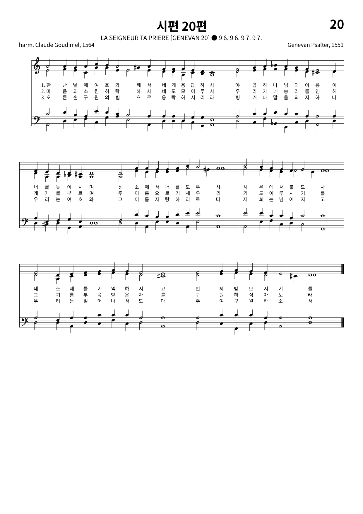

시편 20편
LA SEIGNEUR TA PRIERE [GENEVAN 20] · 9 6. 9 6. 9 7. 9 7.
곡조: Genevan Psalter, 1551 · 화성: Claude Goudimel, 1564 · 가사: 개역한글판 시편 20편 편역(AI 초벌 편역판 · 신학 감수 전) · 3절
악보 PDF MusicXML(출력용) MusicXML(반주용, 전주·반복 포함) 개역한글 시편 20편 읽기
악보

가사
1절 (시편 1~3절)
환난 날에 여호와께서
네게 응답하사
야곱 하나님의 이름이
너를 높이시며
성소에서 너를 도우사
시온에서 붙드사
네 소제를 기억하시고
번제 받으시기를
환난 날에 여호와께서
네게 응답하사
야곱 하나님의 이름이
너를 높이시며
성소에서 너를 도우사
시온에서 붙드사
네 소제를 기억하시고
번제 받으시기를
2절 (시편 4~6절 앞)
마음의 소원 허락하사
네 도모 이루사
우리가 네 승리를 인해
개가를 부르며
주 이름으로 기 세우리
기도 이루시기를
그 기름 부음 받은 자를
구원하심 아노라
마음의 소원 허락하사
네 도모 이루사
우리가 네 승리를 인해
개가를 부르며
주 이름으로 기 세우리
기도 이루시기를
그 기름 부음 받은 자를
구원하심 아노라
3절 (시편 6절 뒤~9절)
오른손 구원의 힘으로
응락하시리라
병거나 말을 의지하나
우리는 여호와
그 이름 자랑하리로다
저희는 넘어지고
우리는 일어나 서도다
주여 구원하소서
오른손 구원의 힘으로
응락하시리라
병거나 말을 의지하나
우리는 여호와
그 이름 자랑하리로다
저희는 넘어지고
우리는 일어나 서도다
주여 구원하소서